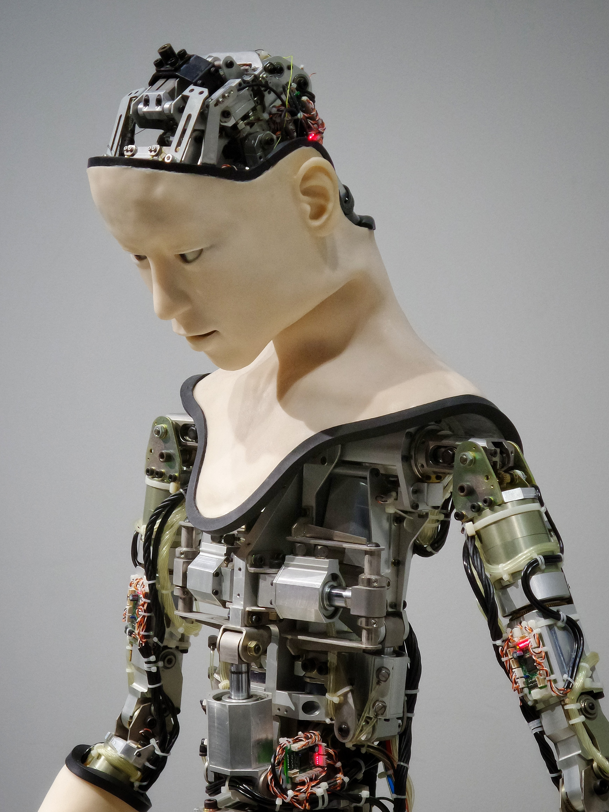

about
Alexina Olivia Hill
I am currently 18 years old, and I have always had a passion for engineering and coding! Since I was a kid, I would always build things and take on little projects . I have made vending machines out of cardboard, a homemade doorbell with electrical supplies, and have done some impressive work in AutoCAD.

Throughout my life I have been going to engineering and coding camps. Some of my favorite camps were BlackGirlsCode and KodeWithKlossy! Some other projects I’ve worked on throughout the years: Coding a video game, building a robot for robot battles, and I’ve coded a website from scratch! ♡( •ॢ◡-ॢ)✧˖° ♡
During High School, I became so into classwork that I stopped going to coding camps and clubs. I am getting back into the swing of coding, and have rekindled an old passion. I have coded many small websites and never plan on stopping. I am currently re-learning HTML and CSS. After, I plan on moving on to Python and Javascript! I have no previous coding experience in the job field, but I have vast amount of knowledge in the fast food range. ( ノ・・)ノ LOL.
 Other hobbies of mine include baking. I love to bake cakes, cookies and cupcakes! I find baking as a really fun hobby, its always fun to see the final product. (and to eat it!) (≧U≦❁)β I enjoy reading manga, one of my favorite manga artists is Junji Ito. He creates the most detailed horror art I’ve ever seen! Another hobby of mine is daily walks, they really clear your mind and are very peaceful.
In the future, I see myself as a top software engineer. My dream is to work with the company Google, and code their website!
Other hobbies of mine include baking. I love to bake cakes, cookies and cupcakes! I find baking as a really fun hobby, its always fun to see the final product. (and to eat it!) (≧U≦❁)β I enjoy reading manga, one of my favorite manga artists is Junji Ito. He creates the most detailed horror art I’ve ever seen! Another hobby of mine is daily walks, they really clear your mind and are very peaceful.
In the future, I see myself as a top software engineer. My dream is to work with the company Google, and code their website!
I am looking for an internship at a company or organization that teaches computer software and has hands on experience. I hope you consider me as an intern (ε(*´･ω･)っ†*ﾟ¨ﾟﾟ･*:..☆
take a look at my coding projects!